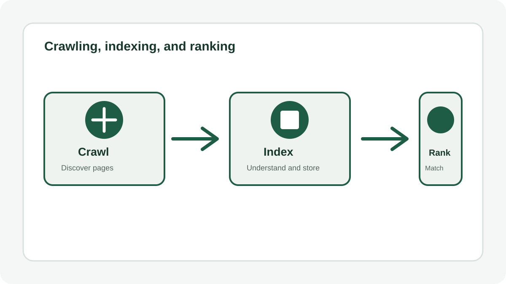
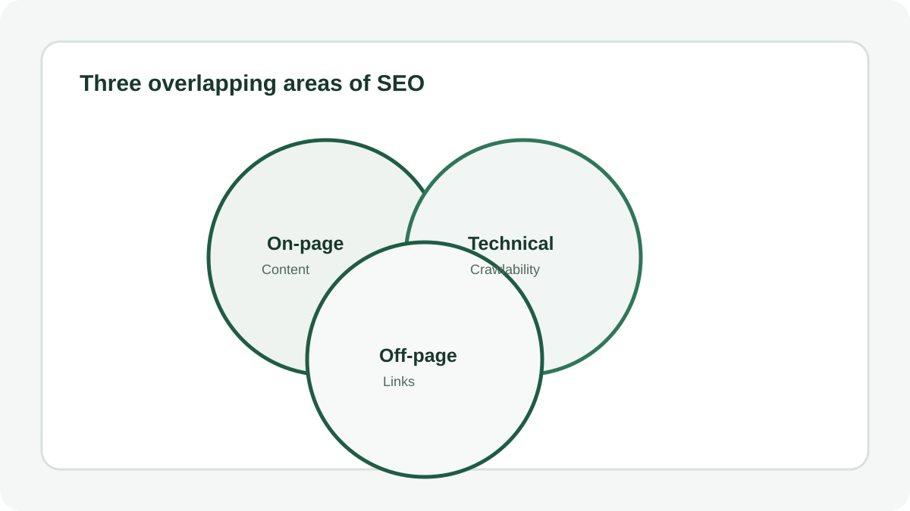
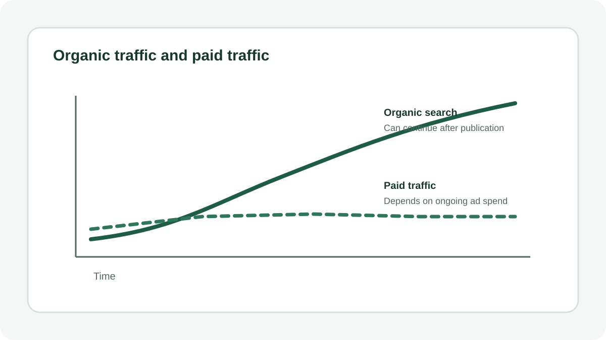

If you've ever typed something into Google and clicked one of the first few results without a second thought, you've already experienced SEO working exactly as intended. You just didn't see the years of decisions behind that page showing up first.
SEO stands for search engine optimization, and at its core it's the practice of helping search engines understand your website so they can show it to the right people at the right moment. That sounds simple. In practice, it touches everything from how your pages are built to what you write and who links to you. This guide breaks down what SEO actually is, how search engines decide what to show, and what genuinely moves the needle if you want more visitors finding your site through search.
What SEO Actually Means
According to Google's own documentation, SEO is about helping search engines understand your content, and helping users find your site and decide whether they should visit it through a search result. Notice that definition has two halves. One is technical, making sure a search engine can actually access and interpret your pages. The other is about people, giving them a genuine reason to click and stay once they arrive.
Most beginners focus entirely on the first half and forget the second. Both matter. A page a search engine can't read will never rank. A page that ranks but doesn't answer the reader's question won't hold their attention or earn a second visit.
It's worth clearing up one common confusion early. SEO is not the same as paid advertising. When you pay for a spot at the top of a results page, that's search engine marketing. SEO is about earning your place in the organic results, the ones nobody paid to appear in, through relevance and quality instead of a budget.
How Search Engines Actually Find and Understand Your Site
To understand why SEO works the way it does, it helps to know what happens behind the scenes before your page ever shows up in a search result. Google, and most other search engines, rely on three basic stages.
Crawling
Search engines use automated programs, often called crawlers or spiders, that constantly explore the web looking for pages to add to their index. Google finds most new pages through links from pages it has already crawled, which is one reason links matter so much in SEO. You generally don't need to manually submit your site for a crawler to find it. Publishing it on the web and having at least one other page link to it is usually enough to get the process started.
Indexing
Once a page is crawled, the search engine tries to understand what it's about and stores that information in a massive index, essentially a library of the web. If a page has technical problems that block a crawler from reading it properly, such as important content hidden behind JavaScript the crawler can't render, it may never make it into the index at all, which means it can't appear in results no matter how good the content is.
Ranking
When someone searches, the engine sorts through everything in its index and decides which pages best match that specific query. This is where the real competition happens. Google has stated plainly that this involves more than just one factor. Link based signals like PageRank are part of it, but they're only one of many signals used, not the whole story.
Every SEO decision you make ultimately supports one of these three stages. Fixing technical issues helps crawling and indexing. Writing genuinely useful content and earning links helps ranking.

The Three Types of SEO
SEO tends to get organized into three overlapping categories. Understanding the difference helps you figure out where your own site actually needs the most work.
On-Page SEO
This covers everything on the page itself, your titles, headings, body content, and images. Google specifically looks at whether your title text is unique, clear, and accurately describes the page, since it's often used to generate the clickable headline in search results. Content quality lives here too. Well organized, well written, original content that genuinely answers a reader's question tends to perform best over time.
Technical SEO
This is the plumbing. It covers whether search engines can actually crawl and render your pages, how fast your site loads, whether it works well on mobile devices, and whether you have duplicate versions of the same page competing against each other under different URLs. None of this is glamorous, but a site with strong content and broken technical foundations will still struggle to rank.
Off-Page SEO
This mostly means links from other websites pointing back to yours. Google treats links as one of the primary ways it discovers new content and one of its ranking signals, since a link from a trustworthy source acts as a kind of vote of confidence. Off-page SEO also includes broader promotion, social sharing, word of mouth, and anything that gets people talking about and linking to your site naturally.

How SEO Actually Drives More Traffic
Here's the practical payoff. Every day, people type millions of questions and product searches into search engines instead of asking a friend or opening an app. If your site shows up when they search for something you genuinely offer or explain well, you get a visitor who arrived already interested in what you have, at no cost per click.
That's the core difference between SEO and paid traffic. Paid traffic stops the moment you stop paying. Organic traffic from SEO tends to compound. A well optimized page you publish today can keep bringing in visitors for years, especially if you keep it updated and accurate.
This is also why SEO tends to reward patience over shortcuts. Google has been direct about the fact that there are no secrets that will automatically rank a site first, and that some changes take a few hours to show effects while others take months. Sites that consistently follow good practices are more likely to show up in results over time, not guaranteed to.

What Actually Moves the Needle
A lot of SEO advice online is outdated or exaggerated. Based on Google's own current guidance, a few things stand out as genuinely worth your attention.
- Write for people first. Content that's easy to read, well organized, and genuinely useful influences your site's presence in search results more than almost anything else on this list.
- Use headings and clear structure. Breaking content into sections with descriptive headings helps both readers and search engines follow your page.
- Link to relevant resources, and earn links back. Links help search engines discover new content and understand which pages other sites consider trustworthy.
- Write descriptive titles and meta descriptions. These directly shape how your page appears in a search result and whether someone decides to click.
- Keep content accurate and current. Outdated information hurts trust, both with readers and with how search engines evaluate quality over time.
Equally useful is knowing what not to worry about. Google has explicitly said that keyword stuffing, cramming the same term into your content repeatedly, works against you and violates its spam policies rather than helping you rank. There's also no minimum or maximum word count that guarantees better rankings, and the number or order of your headings has little direct effect on ranking, even though clear structure still helps readers. Chasing these outdated tactics wastes time better spent on content and technical fundamentals.
How Long Does SEO Take to Show Results
This is one of the most common questions, and the honest answer is that it varies. Some changes are reflected within hours, others take months. Most practitioners recommend waiting several weeks before judging whether a specific change made a difference, since search engines need time to recrawl and reassess your pages.
This is also why SEO rarely works well as a one time project. It's an ongoing practice of publishing useful content, fixing technical issues as they surface, and building genuine relevance in your topic area over time.
Getting Started With SEO on Your Own Site
- Confirm search engines can find your site at all, using a simple site search to check if your pages are indexed.
- Fix any technical barriers that block crawling, such as content hidden behind scripts a crawler can't process.
- Organize your site with clear, descriptive URLs and logical groupings of related content.
- Write content that directly answers what your target reader is searching for, in your own words.
- Build natural links, both within your own site and from other trustworthy sites in your space.
None of these steps requires guesswork or special tools to begin. They just require attention and consistency.
Conclusion
SEO is not a trick to outsmart a search engine. It's the practice of making a website genuinely easy for both machines and people to understand, so the right visitors find it at the moment they're already looking. Get the technical foundation right, write content that actually helps your reader, and build real relevance through links and consistency, and traffic tends to follow.
Takeaway: Before you chase any SEO tactic, ask a simpler question first. If a search engine could read this page perfectly, would a real person still find it worth reading? If the answer is yes, you're already ahead of most of the internet.